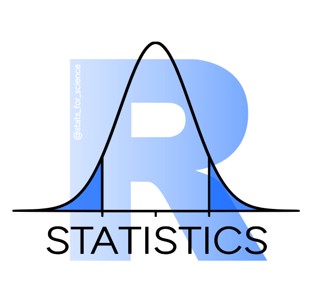

Code
paste('Для 5 тестов: ', mean(replicate(10000, sum(replicate(5, t.test(rnorm(100), rnorm(100))$p.value) < 0.05) != 0)))[1] "Для 5 тестов: 0.2257"Время чтения ~10 минут
Разберем, что такое поправки на множественное тестирование, зачем они нужны, как работают основные методы, которые часто используются в науке и индустрии, а также на что опираться при выборе поправки в своем исследовании.
Начнем разбор с классификации.
Существует 2 принципиально разных подхода к поправкам на множественное тестирование.
Контроль групповой вероятности ошибки I рода (FWER, family-wise error rate)
Тесты, которые поправляют значимость у набора p-value (поправка Бонферрони, Холма, Шидака и тд.) вне зависимости, какой тест был применен до этого;
Тесты для попарных сравнений групп: пост-хоки (поправка Тьюки, поправка Даннета, тест Фишера LSD и тд).
Контроль доли ложных открытий (FDR, false discovery rate): поправка Benjamini-Hochberg, поправка Benjamini-Yekutieli.
Небольшое напоминание про типы ошибок:
Разберем разные виды поправок подробнее.
FWER – групповая вероятность ошибки I рода. Мне больше нравится определение, что это вероятность совершить хоть одну ошибку первого рода в нескольких тестах. Обычно рассчитывается для серии тестов (но можно посчитать FWER и для одного теста: вероятность будет равна \(\alpha\)).
\[ FWER = 1 - (1-\alpha)^k, где \tag{1}\]
k - количество тестов, \(\alpha\) - уровень значимости.
Для корректного применения формулы тесты должны быть независимыми.
Если это не так, то посчитать точный FWER можно с помощью симуляции, а по формуле вычисляется верхняя граница (то есть максимально возможное значение вероятности совершить ошибку I рода).
Пример ситуаций, когда тесты зависимы:
Мы собрали две группы образцов и измерили у них 20 параметров. Тесты зависимы, поскольку пул образцов один и тот же для каждого измеренного параметра.
У нас 3 группы, делаем попарное сравнение каждой группы с каждой. Тесты зависимы, поскольку одна и та же группа участвует в двух тестах.
Во многих ситуациях тесты являются зависимыми, тем не менее, при множественном тестировании даже для зависимых тестов ошибка первого рода превышает пороговое 0.05.
Генерируем заданное количество раз (5, 10, 50, 100) выборки размером 100 элементов из одной генеральной совокупности (стандартного нормального распределения) и сравниваем их t-тестом. Повторяем это 10000 раз, чтобы оценить долю случаев, где мы получили p-value < 0.05 (ложнопозитивный результат).
Тесты независимые, поскольку каждый раз извлекаем новую выборку, следовательно, мы ожидаем увидеть результат, близкий к рассчитанному по формуле выше.
paste('Для 5 тестов: ', mean(replicate(10000, sum(replicate(5, t.test(rnorm(100), rnorm(100))$p.value) < 0.05) != 0)))[1] "Для 5 тестов: 0.2257"\(FWER = 1 - (1-\alpha)^k = 1 - (1-0.05)^5 = 0.226\)
paste('Для 10 тестов: ', mean(replicate(10000, sum(replicate(10, t.test(rnorm(100), rnorm(100))$p.value) < 0.05) != 0)))[1] "Для 10 тестов: 0.4046"\(FWER = 1 - (1-\alpha)^k = 1 - (1-0.05) ^{10} = 0.401\)
paste('Для 50 тестов: ', mean(replicate(10000, sum(replicate(50, t.test(rnorm(100), rnorm(100))$p.value) < 0.05) != 0)))[1] "Для 50 тестов: 0.925"\(FWER = 1 - (1-\alpha)^k = 1 - (1-0.05) ^{50} = 0.923\)
paste('Для 100 тестов: ', mean(replicate(10000, sum(replicate(100, t.test(rnorm(100), rnorm(100))$p.value) < 0.05) != 0)))[1] "Для 100 тестов: 0.9938"\(FWER = 1 - (1-\alpha)^k = 1 - (1-0.05) ^{100} = 0.994\)
Действительно, при симуляции значения FWER сходятся с теоретически рассчитанными. Что можно сделать, чтобы избежать ошибок первого рода?
Самый простой способ контролировать вероятность ошибки первого рода – это изменить критический уровень значимости \(\alpha\).
\[ FWER = 1 - (1-\frac{\alpha}{k})^k, \tag{2}\]
Делим \(\alpha\) на число тестов -> получаем новый p-уровень значимости, ниже которого результаты будут считаться статистически значимыми.
Или умножаем каждое p-value на количество тестов, и если поправленное p-value < 0.05, то результат считается статистически значимым.
При таком подходе мы контролируем вероятность совершить хоть одну ошибку первого рода на уровне 0.05, однако сильно завышаем вероятность ошибки второго рода (то есть не найти значимый эффект, где он на самом деле есть), следовательно, уменьшаем мощность теста.
Проверим FWER после поправки.
paste('Для 5 тестов FWER по Бонферрони: ', mean(replicate(10000, sum(replicate(5, t.test(rnorm(100), rnorm(100))$p.value) < 0.05/5) != 0)))[1] "Для 5 тестов FWER по Бонферрони: 0.0491"paste('Для 10 тестов FWER по Бонферрони: ', mean(replicate(10000, sum(replicate(10, t.test(rnorm(100), rnorm(100))$p.value) < 0.05/10) != 0)))[1] "Для 10 тестов FWER по Бонферрони: 0.0462"paste('Для 50 тестов FWER по Бонферрони: ', mean(replicate(10000, sum(replicate(50, t.test(rnorm(100), rnorm(100))$p.value) < 0.05/50) != 0)))[1] "Для 50 тестов FWER по Бонферрони: 0.0476"paste('Для 100 тестов FWER по Бонферрони: ', mean(replicate(10000, sum(replicate(100, t.test(rnorm(100), rnorm(100))$p.value) < 0.05/100) != 0)))[1] "Для 100 тестов FWER по Бонферрони: 0.0484"Да, мы контролируем FWER на заданном уровне 0.05.
Поправка Бонферрони используется редко, в основном в областях, где цена ошибок первого рода (ложнопозитивного результата) очень высока, например в исследованиях GWAS на человеке. В остальных случаях рекомендуют использовать менее консервативные поправки.
Менее консервативная поправка. Метод часто называют “Бонферрони-Холма”, однако Карло Бонферрони не имел отношения к разработке этой формулы. Разберем на примере как работает.
p_value <- c(0.004, 0.87, 0.003, 0.04, 0.18, 0.24)Сортируем и ранжируем p-value по возрастанию, далее по формуле умножаем каждое p-value на \((m+1-rank)\), где \(m\) - количество тестов, \(rank\) - ранг p-value.
| pvalue | rank_pvalue | formula | result |
|---|---|---|---|
| 0.003 | 1 | 0.003*(6 + 1 - 1) | 0.018 |
| 0.004 | 2 | 0.004*(6 + 1 - 2) | 0.020 |
| 0.040 | 3 | 0.04*(6 + 1 - 3) | 0.160 |
| 0.180 | 4 | 0.18*(6 + 1 - 4) | 0.540 |
| 0.240 | 5 | 0.24*(6 + 1 - 5) | 0.480 |
| 0.870 | 6 | 0.87*(6 + 1 - 6) | 0.870 |
Далее нужно задать, что поправленные p-value могут только возрастать, и при этом p-value заменяется на бОльшее, поэтому процедура поправки Холма называется пошаговой нисходящей – step-down.
| pvalue | rank_pvalue | formula | result | p_adjusted |
|---|---|---|---|---|
| 0.003 | 1 | 0.003*(6 + 1 - 1) | 0.018 | 0.018 |
| 0.004 | 2 | 0.004*(6 + 1 - 2) | 0.020 | 0.020 |
| 0.040 | 3 | 0.04*(6 + 1 - 3) | 0.160 | 0.160 |
| 0.180 | 4 | 0.18*(6 + 1 - 4) | 0.540 | 0.540 |
| 0.240 | 5 | 0.24*(6 + 1 - 5) | 0.480 | 0.540 |
| 0.870 | 6 | 0.87*(6 + 1 - 6) | 0.870 | 0.870 |
Можем убедиться, что у нас подсчитано все верно:
p.adjust(sort(p_value), method = 'holm')[1] 0.018 0.020 0.160 0.540 0.540 0.870Поскольку для самого минимального p-value поправленное p-value такое же как и в Бонферрони, то поправка Холма контролирует FWER на том же уровне 0.05, что и поправка Бонферрони, при этом не так сильно снижает мощность тестов.
Проверим на 100 тестах:
replicate(1000, sum(replicate(100, t.test(rnorm(100), rnorm(100))$p.value) %>%
p.adjust(method = 'holm') < 0.05) != 0) %>%
mean()[1] 0.059Таким образом, мы все еще контролируем вероятность совершить хоть одну ошибку первого рода на уровне 0.05, и оставляем больше значимых результатов, по сравнению с поправкой Бонферрони. Поэтому во многих случаях рекомендуют использовать именно поправку Холма для множественных сравнений.
Holm, S. (1979). A simple sequentially rejective multiple test procedure. Scandinavian Journal of Statistics, 6, 65–70. https://www.jstor.org/stable/4615733.
Теперь перейдем к поправкам, которые используются в конкретных тестах.
Используется как постхок тест только после значимой ANOVA для сравнения средних групп между собой (напоминаю, что ANOVA, дисперсионный анализ дает ответ на вопрос, есть ли хоть какое-то различие между группами, но не говорит между какими). Также тест можно применять только для сравнения трех групп.
Формула вычисления критерия:
\[ t = \frac{\overline{X_1}-\overline{X2}}{\sqrt{MSE(\frac{1}{n_1}+\frac{1}{n_2})}}, где \]
\(\overline{X_1}\), \(\overline{X_2}\) – средние групп 1 и 2, \(n_1\), \(n_2\) – размер групп 1 и 2, \(MSE\) – mean square error из таблицы ANOVA, то есть общая дисперсия между всеми группами.
Для трех групп имеет большую мощность чем Тьюки. Но если групп больше чем 3, то контролирует FWER на уровне больше 0.05 и следовательно к использованию не рекомендуется.
Подробнее, почему это так, можно посмотреть здесь.
Используется как постхок тест вне зависимости от значимости ANOVA (подробнее ниже) для сравнения средних групп между собой, чтобы узнать какие именно группы различаются. Также нет ограничения на количество групп, участвующих в сравнении.
В этом тесте сравнивается каждая группа с каждой, поэтому у него будет минимальная мощность, так как тестов больше всего. Если нам не нужно сравнивать каждую группу с каждой, то лучше использовать тест Даннета, который сравнивает одну группу с остальными и имеет более высокую мощность.
Формула расчета тестовой статистики:
\[ q_s = \frac{M_1 - M_2}{\sqrt{\frac{SS_w}{2}(\frac{1}{n_A}+\frac{1}{n_B})}}, \]
где M1 > M2 (средние в группе), nA, nB - размер 1 и 2 выборки, \(SS_W\) - внутригрупповая сумма квадратов в ANOVA.
Для проверки гипотезы используется studentized range distribution, студентизированное распределение (не путать с t-распределением).
У теста Тьюки есть допущения к использованию:
Независимость наблюдений
Примерное равенство дисперсий
Примерно нормальное распределение данных в группах
Если допущения про нормальность распределения и равенство дисперсий не выполняются, то можно использовать непараметрические аналоги теста.
Тест Тьюки вовсе необязательно использовать только после значимой ановы, как нередко пишут в учебниках, просто в тесте при расчете используется внутригрупповая сумма квадратов и количество степеней свободы из таблицы ANOVA. Поэтому в докомпьютерное время расчет критерия Тьюки был проще после дисперсионного анализа, и при незначимой анове сравнивать группы между собой уже не имело смысла. Сейчас в R в функции TukeyHSD() для расчета критерия Тьюки в качестве инпута используется результат ановы, но никто не запрещает применять тест и если анова оказалась незначимой.
Также может быть и ситуация, когда по результатам ANOVA получилось, что средние групп различаются между собой, но при этом по Тьюки нет, можно почитать здесь, почему так бывает.
Является непараметрическим постхок тестом, аналогом теста Тьюки, для ситуаций, когда его допущения не выполняются.
По сути сравнивает средний ранг групп, вычисленных после теста Краскелла-Уоллиса (Kruskal-Wallis), таким образом как бы учитывая общую дисперсию между группами (чего не будет происходить в попарных тестах Манна-Уитни). Далее полученные p-value должны быть поправлены любым методом, например Бонферрони, Холм, FDR.
Лично мне это в свое время сломало мозг, что это поправка в поправке, вроде используем постхок тест, но при этом его результат тоже нужно поправить тестом на выбор (в функции dunn_test() из пакета rstatix поправка Холма происходит автоматически).
Как альтернатива, в качестве непараметрического аналога Тьюки можно использовать попарные тесты Манна-Уитни с поправками, однако ранги будут рассчитаны отдельно для каждого теста.
Оригинальная статья про метод:
Dunn, O. J. (1964) Multiple comparisons using rank sums Technometrics, 6(3):241-252.
С помощью этого теста сравнивают одну группу с остальными группами, например, когда задача сравнить контрольную группу и несколько воздействий, и не нужно сравнение каждой группы с каждой
Например, у нас 4 группы, из которой одна группа контрольная, с которой мы проводим сравнения. У нас будет всего 3 сравнения: control - A, control - B, control - C, что увеличивает мощность теста.
Для теста Даннета должны соблюдаться такие же допущения, как и для теста Тьюки: независимость наблюдений, примерно равная дисперсия в группах и нормальное распределение.
Посмотреть детально можно здесь.
Теперь перейдем к принципиально другому подходу поправок – контроле доли ложных открытий (FDR).
FDR, false discovery rate – доля ложнопозитивных результатов.
В скрининговых экспериментах, таких как анализ RNA-seq данных важнее контролировать долю ложнопозитивных результатов (FDR), чем вероятность совершить хоть одно ложное открытие.
| H0 верна (различий нет) | H0 неверна (различие есть) | |
|---|---|---|
| Не отклонить H0 | True Negative (TN) | False Negative (FN) |
| Отклонить H0 | False Positive (FP) | True Positive (TP) |
\[ FDR = \frac{FP}{FP + TP} \]
Подробнее в этом видео.
Расмотрим контроль FDR по методу Бенджамини-Хохберга (Benjamini-Hochberg), так как он используется чаще всего. Также FDR можно посчитать с помощью метода Benjamini-Yekutieli, но он имеет меньшую мощность и используется реже.
p_values <- c(0.361, 0.387, 0.005, 0.009, 0.022, 0.051, 0.101, 0.019)| pvalue | rank_pvalue | formula | result |
|---|---|---|---|
| 0.005 | 1 | 0.005*(8/1) | 0.0400000 |
| 0.009 | 2 | 0.009*(8/2) | 0.0360000 |
| 0.019 | 3 | 0.019*(8/3) | 0.0506667 |
| 0.022 | 4 | 0.022*(8/4) | 0.0440000 |
| 0.051 | 5 | 0.051*(8/5) | 0.0816000 |
| 0.101 | 6 | 0.101*(8/6) | 0.1346667 |
| 0.361 | 7 | 0.361*(8/7) | 0.4125714 |
| 0.387 | 8 | 0.387*(8/8) | 0.3870000 |
Итоговое FDR вычисляется так, чтобы p-value не убывали, но при этом приводится в меньшую сторону (в отличие от поправки Холма), поэтому процедура называется пошаговой восходящей – step-up.
| pvalue | rank_pvalue | formula | result | p_adjusted | reject_H0 |
|---|---|---|---|---|---|
| 0.005 | 1 | 0.005*(8/1) | 0.0400000 | 0.0360000 | yes |
| 0.009 | 2 | 0.009*(8/2) | 0.0360000 | 0.0360000 | yes |
| 0.019 | 3 | 0.019*(8/3) | 0.0506667 | 0.0440000 | yes |
| 0.022 | 4 | 0.022*(8/4) | 0.0440000 | 0.0440000 | yes |
| 0.051 | 5 | 0.051*(8/5) | 0.0816000 | 0.0816000 | no |
| 0.101 | 6 | 0.101*(8/6) | 0.1346667 | 0.1346667 | no |
| 0.361 | 7 | 0.361*(8/7) | 0.4125714 | 0.3870000 | no |
| 0.387 | 8 | 0.387*(8/8) | 0.3870000 | 0.3870000 | no |
FDR в основном используется в скрининговых экспериментах, где ключевые результаты могут быть проверены уже более прицельным экспериментом (например некоторые дифференциально экспрессирующиеся гены по результатам RNA-seq проверяют количественной ПЦР).
Все зависит от задачи. Лично я стараюсь ответить на вопрос, что в конкретном случае важнее контролировать - FWER или FDR. Разумно использовать FDR в массовых экспериментах, где количество тестов исчисляется десятками тысяч, при этом найти ложнопозитивный результат не так страшно. FWER же контролируют в более fine-scale экспериментах, где нам не хотелось бы совершить ошибку первого рода или где ее цена очень высока (исследования на человеке).
Если у нас есть конкретный тест, например Тьюки для сравнения групп между собой, то обычно его и используют, если же ситуация более нестандартная, допустим после бутстреп теста нужно сделать поправку на множественное тестирование, то здесь я бы использовала поправку Холма.
В любом случае нужно опираться на особенности и ограничения тестов, которые я постаралась расписать, надеюсь это поможет выбрать тест мудро правильно.
Посмотреть подробнее про все поправки на множественное тестирование можно в этой серии видео от замечательного канала по статистике @TileStats
А также подписывайтесь на телеграм-канал, делитесь постом, пишите комментарии!
